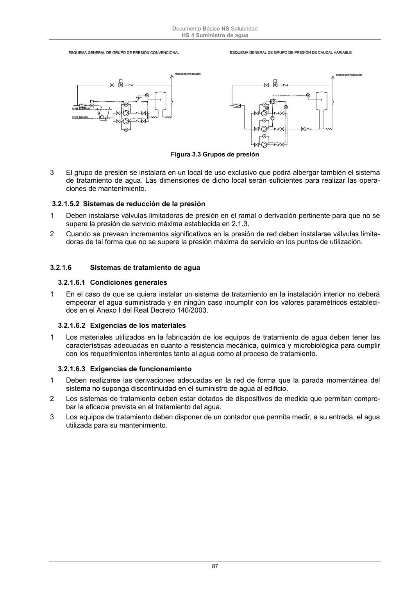

DB-HS Salubridad · edición 2022-06-14 · capa oficial
Documento DB-HS-oficial · SHA-256 del PDF 68df3caacc95f71aee2ec1ba7b2c65ae66155c21e3a8785521b8fdd4fd640d3b
Página física 87 de 184.
Copia fiel del PDF fuente · Fuente oficial
Ficha de la disposición en la fuente oficial
Formato: Texto de la página (Markdown)
Documento Básico HS Salubridad HS 4 Suministro de agua 87 Figura 3.3 Grupos de presión 3 El grupo de presión se instalará en un local de uso exclusivo que podrá albergar también el sistema de tratamiento de agua. Las dimensiones de dicho local serán suficientes para realizar las opera- ciones de mantenimiento. 3.2.1.5.2 Sistemas de reducción de la presión 1 Deben instalarse válvulas limitadoras de presión en el ramal o derivación pertinente para que no se supere la presión de servicio máxima establecida en 2.1.3. 2 Cuando se prevean incrementos significativos en la presión de red deben instalarse válvulas limita- doras de tal forma que no se supere la presión máxima de servicio en los puntos de utilización. 3.2.1.6 Sistemas de tratamiento de agua 3.2.1.6.1 Condiciones generales 1 En el caso de que se quiera instalar un sistema de tratamiento en la instalación interior no deberá empeorar el agua suministrada y en ningún caso incumplir con los valores paramétricos estableci- dos en el Anexo I del Real Decreto 140/2003. 3.2.1.6.2 Exigencias de los materiales 1 Los materiales utilizados en la fabricación de los equipos de tratamiento de agua deben tener las características adecuadas en cuanto a resistencia mecánica, química y microbiológica para cumplir con los requerimientos inherentes tanto al agua como al proceso de tratamiento. 3.2.1.6.3 Exigencias de funcionamiento 1 Deben realizarse las derivaciones adecuadas en la red de forma que la parada momentánea del sistema no suponga discontinuidad en el suministro de agua al edificio. 2 Los sistemas de tratamiento deben estar dotados de dispositivos de medida que permitan compro- bar la eficacia prevista en el tratamiento del agua. 3 Los equipos de tratamiento deben disponer de un contador que permita medir, a su entrada, el agua utilizada para su mantenimiento.
